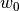
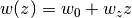
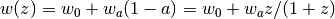
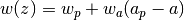
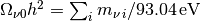
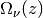
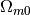
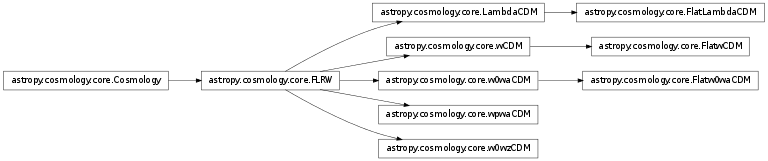

The astropy.cosmology subpackage contains classes for representing cosmologies, and utility functions for calculating commonly used quantities that depend on a cosmological model. This includes distances, ages and lookback times corresponding to a measured redshift or the transverse separation corresponding to a measured angular separation.
There are many functions available to calculate cosmological quantities. They generally take a redshift as input. For example, the two cases below give you the value of the Hubble constant at z=0 (i.e., H0), and the number of transverse proper kpc corresponding to an arcminute at z=3:
>>> from astropy import cosmology
>>> cosmology.core.set_current(cosmology.WMAP9)
>>> cosmology.H(0)
<Quantity 69.3... km / (Mpc s)>
>>> cosmology.kpc_proper_per_arcmin(3)
<Quantity 472.977096... kpc / arcmin>
All the functions available are listed in the Reference/API section. These will use the “current” cosmology to calculate the values (see The Current Cosmology section below for more details). If you haven’t set this explicitly, they will use the 9-year WMAP cosmological parameters and print a warning message.
Also note that the cosmology subpackage makes use of units, so in many cases returns values with units attached – consult the documentation for that subpackage for more details, but, briefly, to access the floating point (or array) values:
>>> from astropy import cosmology
>>> H0 = cosmology.H(0)
>>> H0.value, H0.unit
(69.3..., Unit("km / (Mpc s)"))
There are also several standard cosmologies already defined, as described in Built-in Cosmologies below. These are objects with methods and attributes that calculate cosmological values. For example, the comoving distance in Mpc to redshift 4 using the 5-year WMAP parameters:
>>> from astropy.cosmology import WMAP5
>>> WMAP5.comoving_distance(4)
<Quantity 7329.3280934955... Mpc>
An important point is that the cosmological parameters of each instance are immutable – that is, if you want to change, say, Om, you need to make a new instance of the class. Also note that the built in cosmologies are instances of classes as described below, not functions.
Most of the functionality is enabled by the FLRW object. This represents a homogeneous and isotropic cosmology (a cosmology characterized by the Friedmann-Lemaitre-Robertson-Walker metric, named after the people who solved Einstein’s field equation for this special case). However, you can’t work with this class directly, as you must specify a dark energy model by using one of its subclasses instead, such as FlatLambdaCDM.
You can create a new FlatLambdaCDM object with arguments giving the Hubble parameter and omega matter (both at z=0):
>>> from astropy.cosmology import FlatLambdaCDM
>>> cosmo = FlatLambdaCDM(H0=70, Om0=0.3)
>>> cosmo
FlatLambdaCDM(H0=70 km / (Mpc s), Om0=0.3, Tcmb0=2.725 K,
Neff=3.04, m_nu=[ 0. 0. 0.] eV)
This can also be done more explicity using units, which is recommended:
>>> from astropy.cosmology import FlatLambdaCDM
>>> import astropy.units as u
>>> cosmo = FlatLambdaCDM(H0=70 * u.km / u.s / u.Mpc, Om0=0.3)
However, most of the parameters that accept units (H0, Tcmb0) have default units, so unit quantities do not have to be used. The exception are neutrino masses, where you must supply a units if you want massive neutrinos.
The pre-defined cosmologies described in the Getting Started section are instances of FlatLambdaCDM, and have the same methods. So we can find the luminosity distance to redshift 4 by:
>>> cosmo.luminosity_distance(4)
<Quantity 35842.353618623194 Mpc>
or the age of the universe at z = 0:
>>> cosmo.age(0)
<Quantity 13.461701658024014 Gyr>
They also accept arrays of redshifts:
>>> cosmo.age([0.5, 1, 1.5]).value
array([ 8.42128047, 5.74698053, 4.19645402])
See the FLRW and FlatLambdaCDM object docstring for all the methods and attributes available. In addition to flat Universes, non-flat varieties are supported such as LambdaCDM. There are also a variety of standard cosmologies with the parameters already defined (see Built-in Cosmologies):
>>> from astropy.cosmology import WMAP7 # WMAP 7-year cosmology
>>> WMAP7.critical_density(0) # critical density at z = 0
<Quantity 9.31000324...e-30 g / cm3>
You can see how the density parameters evolve with redshift as well
>>> from astropy.cosmology import WMAP7 # WMAP 7-year cosmology
>>> WMAP7.Om([0, 1.0, 2.0]), WMAP7.Ode([0., 1.0, 2.0])
(array([ 0.272 , 0.748985..., 0.909052...]),
array([ 0.727915..., 0.250550..., 0.090102...]))
Note that these don’t quite add up to one even though WMAP7 assumes a flat Universe because photons and neutrinos are included, and that they are not Quantity objects because they are dimensionless.
Cosmological instances have an optional name attribute which can be descriptive:
>>> from astropy.cosmology import FlatwCDM
>>> cosmo = FlatwCDM(name='SNLS3+WMAP7', H0=71.58, Om0=0.262, w0=-1.016)
>>> cosmo
FlatwCDM(name="SNLS3+WMAP7", H0=71.6 km / (Mpc s), Om0=0.262,
w0=-1.02, Tcmb0=2.725 K, Neff=3.04, m_nu=[ 0. 0. 0.] eV)
This is also an example of a model with a different model for dark energy, a flat Universe with a constant dark energy equation of state, but not necessarily a cosmological constant. A variety of additional dark energy models are also supported – see Specifying a dark energy model.
In addition to the LambdaCDM object, there are convenience functions that calculate some of these quantities without needing to explicitly give a cosmology - but there are more methods available if you work directly with the cosmology object.
>>> from astropy import cosmology
>>> cosmology.kpc_proper_per_arcmin(3)
<Quantity 472.977096... kpc / arcmin>
>>> cosmology.arcsec_per_kpc_proper(3)
<Quantity 0.126856... arcsec / kpc>
These functions will perform calculations using the “current” cosmology. This is a specific cosmology that is currently active in astropy and it’s described further in the following section. They can also be explicitly given a cosmology using the cosmo keyword argument. A full list of convenience functions is included below, in the Reference/API section.
Sometimes it’s useful for Astropy functions to assume a default cosmology so that the desired cosmology doesn’t have to be specified every time the function is called – the convenience functions described in the previous section are one example. For these cases it’s possible to specify a “current” cosmology.
You can set the current cosmology to a pre-defined value by using the “default_cosmology” option in the [cosmology.core] section of the configuration file (see Configuration system (astropy.config)). Alternatively, you can use the set_current function to set a cosmology for the current Python session.
If you haven’t set a current cosmology using one of the methods described above, then the cosmology module will use the 9-year WMAP parameters and print a warning message letting you know this. For example, if you call a convenience function without setting the current cosmology or using the cosmo= keyword you see the following message:
>>> from astropy import cosmology
>>> cosmology.lookback_time(1) # lookback time in Gyr at z=1
<Quantity 7.846670... Gyr>
The 9-year WMAP and Planck 2013 cosmologies are also available
>>> from astropy.cosmology import WMAP9 # WMAP 9-year
>>> WMAP9.lookback_time(2).value # lookback time in Gyr at z=2
10.442114...
>>> from astropy.cosmology import Planck13 # Planck 2013
>>> Planck13.lookback_time(2) # lookback time in Gyr at z=2
<Quantity 10.511841... Gyr>
Note
In general it’s better to use an explicit cosmology (for example WMAP9.H(0) instead of cosmology.H(0)). The motivation for this is that when you go back to use the code at a later date or share your scripts with someone else, the default cosmology may have changed. Use of the convenience functions should generally be reserved for interactive work or cases where the flexibility of quickly changing between different cosmologies is for some reason useful. Alternatively, putting (for example) cosmology.set_current(WMAP9) at the top of your code will ensure that the right cosmology is always used.
A number of pre-loaded cosmologies are available from the WMAP and Planck satellites. For example,
>>> from astropy.cosmology import Planck13 # Planck 2013
>>> Planck13.luminosity_distance(2) # luminosity distance to z=2
<Quantity 15932.668054... Mpc>
A full list of the pre-defined cosmologies is given by cosmology.parameters.available, and summarized below:
| Name | Source | H0 | Om | Flat |
|---|---|---|---|---|
| WMAP5 | Komatsu et al. 2009 | 70.2 | 0.277 | Yes |
| WMAP7 | Komatsu et al. 2011 | 70.4 | 0.272 | Yes |
| WMAP9 | Hinshaw et al. 2013 | 69.3 | 0.287 | Yes |
| Planck13 | Planck Collab 2013, Paper XVI | 67.8 | 0.307 | Yes |
Currently, all are instances of FlatLambdaCDM. More details about exactly where each set of parameters come from are available in the document tag for each object:
>>> from astropy.cosmology import WMAP7
>>> print(WMAP7.__doc__)
WMAP7 instance of FlatLambdaCDM cosmology
(from Komatsu et al. 2011, ApJS, 192, 18, doi: 10.1088/0067-0049/192/2/18.
Table 1 (WMAP + BAO + H0 ML).)
If you are writing code for the astropy core or an affiliated package, it is strongly recommended that you use the current cosmology through the get_current function. It is also recommended that you provide an override option something like the following:
def myfunc(..., cosmo=None):
from astropy.cosmology import get_current
if cosmo is None:
cosmo = get_current()
... your code here ...
This ensures that all code consistently uses the current cosmology unless explicitly overridden.
In addition to the standard FlatLambdaCDM model described above, a number of additional dark energy models are provided. FlatLambdaCDM and LambdaCDM assume that dark energy is a cosmological constant, and should be the most commonly used cases; the former assumes a flat Universe, the latter allows for spatial curvature. FlatwCDM and wCDM assum a constant dark energy equation of state parameterized by . Two forms of a variable dark energy equation of state are provided: the simple first order linear expansion  by w0wzCDM, as well as the common CPL form by w0waCDM:  and its generalization to include a pivot redshift by wpwaCDM: .
Users can specify their own equation of state by sub-classing FLRW. See the provided subclasses for examples.
The cosmology classes include the contribution to the energy density from both photons and neutrinos. By default, the latter are assumed massless. The three parameters controlling the proporties of these species, which are arguments to the initializers of all the cosmological classes, are Tcmb0 (the temperature of the CMB at z=0), Neff, the effective number of neutrino species, and m_nu, the rest mass of the neutrino species. Tcmb0 and m_nu should be expressed as unit Quantities. All three have standard default values (2.725 K, 3.04, and 0 eV respectively; the reason that Neff is not 3 primarily has to do with a small bump in the neutrino energy spectrum due to electron-positron annihilation, but is also affected by weak interaction physics).
Massive neutrinos are treated using the approach described in the WMAP 7-year cosmology paper (Komatsu et al. 2011, ApJS, 192, 18, section 3.3). This is not the simple  approximation. Also note that the values of  include both the kinetic energy and the rest-mass energy components, and that the Planck13 cosmology includes a single species of neutrinos with non-zero mass (which is not included in ).
The contribution of photons and neutrinos to the total mass-energy density can be found as a function of redshift:
>>> from astropy.cosmology import WMAP7 # WMAP 7-year cosmology
>>> WMAP7.Ogamma0, WMAP7.Onu0 # Current epoch values
(4.985694...e-05, 3.442154...e-05)
>>> z = [0, 1.0, 2.0]
>>> WMAP7.Ogamma(z), WMAP7.Onu(z)
(array([ 4.985694...e-05, 2.745744...e-04, 4.998813...e-04]),
array([ 3.442154...e-05, 1.895678...e-04, 3.451212...e-04]))
If you want to exclude photons and neutrinos from your calculations, simply set Tcmb0 to 0:
>>> from astropy.cosmology import FlatLambdaCDM
>>> import astropy.units as u
>>> cos = FlatLambdaCDM(70.4 * u.km / u.s / u.Mpc, 0.272, Tcmb0 = 0.0 * u.K)
>>> cos.Ogamma0, cos.Onu0
(0.0, 0.0)
Neutrinos can be removed (while leaving photons) by setting Neff to 0:
>>> from astropy.cosmology import FlatLambdaCDM
>>> cos = FlatLambdaCDM(70.4, 0.272, Neff=0)
>>> cos.Ogamma([0,1,2]), cos.Onu([0,1,2])
(array([ 4.98569497e-05, 2.74623215e-04, 5.00051839e-04]),
array([0, 0, 0]))
The number of neutrino species is assumed to be the floor of Neff, which in the default case is 3. Therefore, if non-zero neutrino masses are desired, then 3 masses should be provided. However, if only one value is provided, all the species are assumed to have the same mass. Neff is assumed to be shared equally between each species.
>>> from astropy.cosmology import FlatLambdaCDM
>>> import astropy.units as u
>>> H0 = 70.4 * u.km / u.s / u.Mpc
>>> m_nu = 0 * u.eV
>>> cos = FlatLambdaCDM(H0, 0.272, m_nu=m_nu)
>>> cos.has_massive_nu
False
>>> cos.m_nu
<Quantity [ 0., 0., 0.] eV>
>>> m_nu = [0.0, 0.05, 0.10] * u.eV
>>> cos = FlatLambdaCDM(H0, 0.272, m_nu=m_nu)
>>> cos.has_massive_nu
True
>>> cos.m_nu
<Quantity [ 0. , 0.05, 0.1 ] eV>
>>> cos.Onu([0, 1.0, 15.0])
array([ 0.00326988, 0.00896783, 0.0125786 ])
>>> cos.Onu(1) * cos.critical_density(1)
<Quantity 2.4443803803704...e-31 g / cm3>
While these examples used FlatLambdaCDM, the above examples also apply for all of the other cosmology classes.
The code in this sub-package is tested against several widely-used online cosmology calculators, and has been used to perform calculations in refereed papers. You can check the range of redshifts over which the code is regularly tested in the module astropy.cosmology.tests.test_cosmology. If you find any bugs, please let us know by opening an issue at the github repository!
The built in cosmologies use the parameters as listed in the respective papers. These provide only a limited range of precision, and so you should not expect derived quantities to match beyond that precision. For example, the Planck 2013 results only provide the Hubble constant to 4 digits. Therefore, the Planck13 built-in cosmology should only be expected to match the age of the Universe quoted by the Planck team to 4 digits, although they provide 5 in the paper.
astropy.cosmology contains classes and functions for cosmological distance measures and other cosmology-related calculations.
See the Astropy documentation for more detailed usage examples and references.
| H(z[, cosmo]) | Hubble parameter (km/s/Mpc) at redshift z. |
| angular_diameter_distance(z[, cosmo]) | Angular diameter distance in Mpc at a given redshift. |
| arcsec_per_kpc_comoving(z[, cosmo]) | Angular separation in arcsec corresponding to a comoving kpc at redshift z. |
| arcsec_per_kpc_proper(z[, cosmo]) | Angular separation in arcsec corresponding to a proper kpc at redshift z. |
| comoving_distance(z[, cosmo]) | Comoving distance in Mpc at redshift z. |
| critical_density(z[, cosmo]) | Critical density in grams per cubic cm at redshift z. |
| distmod(z[, cosmo]) | Distance modulus at redshift z. |
| get_current() | Get the current cosmology. |
| kpc_comoving_per_arcmin(z[, cosmo]) | Separation in transverse comoving kpc corresponding to an arcminute at redshift z. |
| kpc_proper_per_arcmin(z[, cosmo]) | Separation in transverse proper kpc corresponding to an arcminute at redshift z. |
| lookback_time(z[, cosmo]) | Lookback time in Gyr to redshift z. |
| luminosity_distance(z[, cosmo]) | Luminosity distance in Mpc at redshift z. |
| scale_factor(z[, cosmo]) | Scale factor at redshift z. |
| set_current(cosmo) | Set the current cosmology. |
| FLRW(H0, Om0, Ode0[, Tcmb0, Neff, m_nu, name]) | A class describing an isotropic and homogeneous (Friedmann-Lemaitre-Robertson-Walker) cosmology. |
| FlatLambdaCDM(H0, Om0[, Tcmb0, Neff, m_nu, name]) | FLRW cosmology with a cosmological constant and no curvature. |
| Flatw0waCDM(H0, Om0[, w0, wa, Tcmb0, Neff, ...]) | FLRW cosmology with a CPL dark energy equation of state and no curvature. |
| FlatwCDM(H0, Om0[, w0, Tcmb0, Neff, m_nu, name]) | FLRW cosmology with a constant dark energy equation of state and no spatial curvature. |
| LambdaCDM(H0, Om0, Ode0[, Tcmb0, Neff, ...]) | FLRW cosmology with a cosmological constant and curvature. |
| w0waCDM(H0, Om0, Ode0[, w0, wa, Tcmb0, ...]) | FLRW cosmology with a CPL dark energy equation of state and curvature. |
| w0wzCDM(H0, Om0, Ode0[, w0, wz, Tcmb0, ...]) | FLRW cosmology with a variable dark energy equation of state and curvature. |
| wCDM(H0, Om0, Ode0[, w0, Tcmb0, Neff, m_nu, ...]) | FLRW cosmology with a constant dark energy equation of state and curvature. |
| wpwaCDM(H0, Om0, Ode0[, wp, wa, zp, Tcmb0, ...]) | FLRW cosmology with a CPL dark energy equation of state, a pivot redshift, and curvature. |
